▲ 잔디에 '고인돌유적' 글자를 새긴 화순 고인돌 유적지. 가을꽃 축제가 이 일대에서 열린다 사진=한국관광공사
해마다 10월이면 전남 화순의 고인돌 유적지에 국화와 코스모스가 깔린다. 올해 2026 세계문화유산 화순 고인돌 가을꽃 축제는 화순군이 밝힌 기간 기준으로 10월 16일부터 25일까지 10일간 열린다. 일부 매체는 10월 17일 개막으로 적었지만, 군 보도를 인용한 다수 보도와 음식부스 운영자 모집 기사는 모두 16일 시작으로 전한다. 이 글은 16~25일을 기준으로 쓴다. 올해 달라진 점은 개막식을 없애고 그 예산을 콘텐츠와 방문객 편의시설에 돌린다는 것이다. 이 글은 광주·전남에서 자차로 가는 방문객 기준으로 입장료·주차·셔틀·혼잡 시간대를 정리했다. 2026년 주차장과 셔틀 세부 운영은 아직 공식 발표를 확인하지 못해, 전년(2025·2024년) 실적은 "전년 기준"으로 구분해 적었다.
1. 한눈에 보기 — 일정·장소·입장료
▲ 호숫가 둑 잔디에 '고인돌유적' 글자를 새긴 유적지 풍경. 축제는 이 일대에서 열린다. 사진=한국관광공사
화순 고인돌 유적은 강화·고창과 함께 유네스코 세계유산에 오른 고인돌 유적이다. 보도에 따르면 화순 구간에는 596기의 고인돌이 있다. 축제는 이 유적지와 가을꽃 정원을 한 번에 걷는 구성이다. 한 가지 짚을 점은 소재지 표기다. 군 안내와 다수 보도는 도곡면 고인돌1로 180 일대로, 일부 보도는 춘양면 유적지로 적는다. 유적이 도곡면과 춘양면에 걸쳐 있기 때문으로 보이며, 전년 보도도 "도곡면 효산리, 춘양면 대신리 일대"로 소개했다.
| 항목 | 내용 | 확인 상태 |
|---|---|---|
| 기간 | 10월 16일(금)~25일(일), 10일간 | 화순군 보도 다수, 화순군청 누리집 안내로도 10/16~25 재확인. 일부 매체 "17일~" 표기 |
| 장소 | 화순 고인돌 유적지 일원(도곡면 고인돌1로 180, 춘양면 포함) | 보도 기준 |
| 입장료 | 5,000원 전액 화순사랑상품권 환급 | 보도 기준 |
| 운영시간 | 09:00~18:00 | 화순군 보도 재확인 |
| 무료 입장 | 화순군민, 미취학 아동, 장애인, 국가유공자, 독립유공자, 5·18민주유공자, 참전유공자(증빙 제시 필요) | 보도 기준 |
| 경관 관람 | 일부 정보 사이트는 11월 2일까지 경관형 관람 가능으로 소개 | 공식 확인 못함 |
| 개막식 | 올해 열지 않음 | 화순군 보도 |
| 문의 | 화순군 관광체육과 061-379-3575~7 | 보도 기준 |
주제는 "꽃길 따라 만나는 천년의 이야기"로 소개되며, 코스모스·국화·해바라기·맨드라미 등 가을꽃을 심었다고 전해진다. 화순군은 앞서 추석 연휴(9월 24~26일)에 유적지 도곡·춘양 안내센터 구간 차량 통행을 한시 허용했는데, 이는 평소에는 일반 차량 통행이 제한된다는 뜻이다. 이 점이 축제 주차 계획에 중요하다.
축제 기본 안내는 한국관광공사 대한민국 구석구석에서 볼 수 있다. 화순 고인돌 가을꽃 축제 안내 바로가기
2. 유네스코 세계유산 화순 고인돌 유적 — 무엇을 볼까
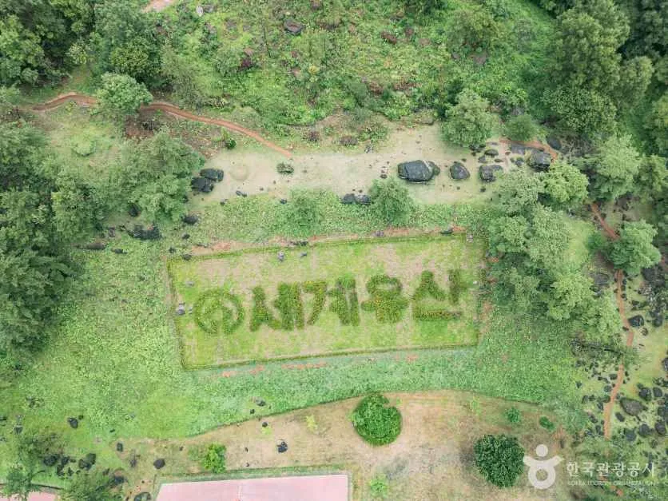
▲ 유적지 비탈에 '세계유산' 글자를 새긴 모습. 고인돌은 산비탈과 골짜기를 따라 흩어져 있다. 사진=한국관광공사
고인돌은 널찍한 전시관 안이 아니라 산자락 곳곳에 놓여 있다. 걸어서 돌아야 하는 구조라 입장 후 소요 시간이 꽤 걸린다. 공식 소요 시간은 확인하지 못했지만, 구간이 길어 전년에는 주차장과 축제장을 잇는 셔틀이 운영됐다.
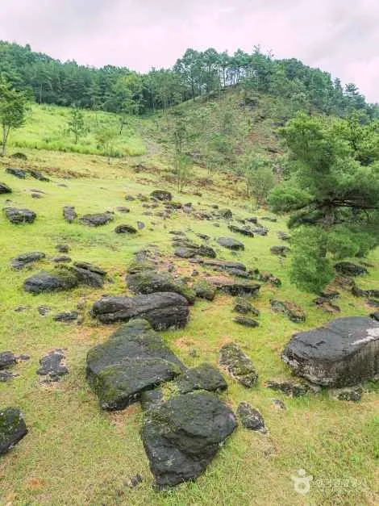
▲ 비탈에 흩어진 바윗덩어리들. 유적 일대는 고인돌 덮개돌로 쓰인 큰 바위가 곳곳에 놓인 지형이다. 사진=한국관광공사
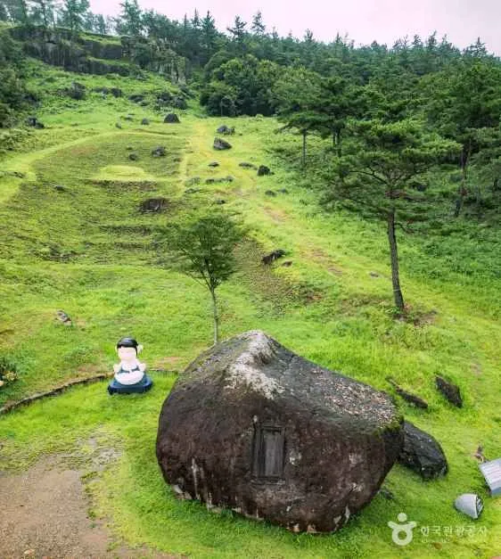
▲ 잔디 비탈에 놓인 큰 바위. 축제 기간에는 캐릭터 콘텐츠존 등 방문객 참여 구성이 추가된다. 사진=한국관광공사
| 구분 | 내용 | 비고 |
|---|---|---|
| 테마 정원 | 국화 정원, 나비정원, 동물정원, 사진 촬영 구역(전년·올해 보도 혼재) | 올해 배치는 현장 확인 |
| 체험 | 청동기 의상실, 고인돌 장신구 공방, 청동기 놀이, 사냥 체험 | 2026 보도 |
| 공연 | 잔디광장 특설무대 DM콘서트, 선사시대 생활 재현 공연, 가을 문화공연 | 올해 라인업·일정은 확인하지 못함(2025는 발라드·레트로·댄스·트롯 4개 장르로 열렸고 정엽·하림·케이시 등이 출연, 전년 기준) |
| 먹거리 | 향토음식 8개소, 단품음식 8개소, 푸드트럭 6개소 | 2026 보도, 다회용기 사용 강조 |
| 연계 이벤트 | 공연 후 화순읍 가수 팬사인회, 고인돌전통시장·파크골프장 스탬프투어 | 미션 완료 시 파크골프장 무료입장, 시장 할인 |
3. 자차 접근과 주차 — 전년 기준으로 읽는 법
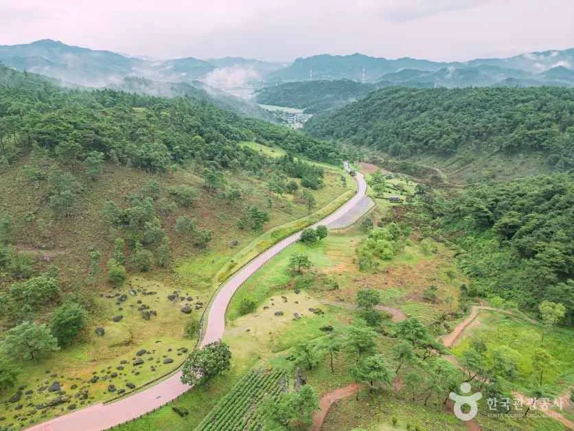
▲ 숲 사이로 굽이치는 유적지 탐방로. 유적 구간이 길어 도곡·춘양 사이를 오가는 이동이 필요하다. 사진=한국관광공사
내비게이션은 "화순 고인돌 유적" 또는 도로명 주소 도곡면 고인돌1로 180로 찍는 것이 가장 단순하다. 한국관광공사 정보상 유적 지번은 도곡면 효산리 64다. 광주·나주·담양에서 가는 소요 시간은 공식 자료가 없어 아래 표를 평시 도로 기준 추정치로 적었다. 또 추석 연휴 한시 개방 보도가 알려 주듯 유적 구간에는 도곡과 춘양 두 안내센터가 있어, 어느 쪽에 세우느냐에 따라 동선이 달라진다.
| 항목 | 2026 | 2025 · 2024 실적 |
|---|---|---|
| 주차 규모 | 공식 발표 확인 못함 | 2025: 1,980면 / 2024: 1,885면 |
| 장애인·임산부·노약자 | 확인 못함 | P2 주차장 50대 전용(2024·2025 보도) |
| 순환 셔틀 | 확인 못함 | 2025: 도곡~춘양 구간 09:30~18:30 상시, 25인승 평일 2대·주말 5대 / 2024: 주말·공휴일 10분 간격 |
| 교통 통제 | 확인 못함 | 2024: 주말 도곡 게이트~양정마을 삼거리 구간 차량 통제 |
| 유모차·휠체어 | 확인 못함 | 2024: 2곳에서 신분증 제시 무료 대여, 각 30대 |
| 출발지 | 평시 소요(추정) | 주말 오전 개장 직후(추정) |
|---|---|---|
| 광주 도심 | 약 45~60분 | 여유 10~20분 더 |
| 나주 시내 | 약 60~75분 | 여유 10~20분 더 |
| 담양 읍내 | 약 70~90분 | 여유 10~20분 더 |
위 시간은 거리와 일반 도로 사정으로 어림한 값이라 출발 전 내비로 다시 보는 게 안전하다. 광주에서 출발한다면 오전에 화순을 보고 오후엔 도심으로 돌아와 광주 양림동·송정시장 하루 코스나 충효동 왕버들과 광주호 산책을 이어 가는 구성도 가능하다.
✅ 자차 방문 요령
· 공식 혼잡 정보는 확인하지 못했다. 일반적으로 평일 오전이나 주말 오전 개장 직후가 한적한 편이다
· 올해 주차 규모와 셔틀 시간은 개막 직전 화순군 공지로 다시 확인한다
· 입장료는 상품권으로 돌려받으므로 환급 장소와 사용처를 입장할 때 확인한다
· 유적 구간은 평소 일반 차량 통행이 제한된다. 통제 구간 안으로 들어가지 말고 안내된 주차장에 세운다
· 걷는 구간이 길어 편한 신발과 비 대비 준비가 필요하다
광주권에서 가을 나들이 주차 요령은 광주김치축제 주차 가이드에도 정리해 두었다. 행사장 주변 대기와 셔틀 활용 방식이 비슷해 참고가 된다.
4. 개화·혼잡 시간대 — 언제 가면 좋을까
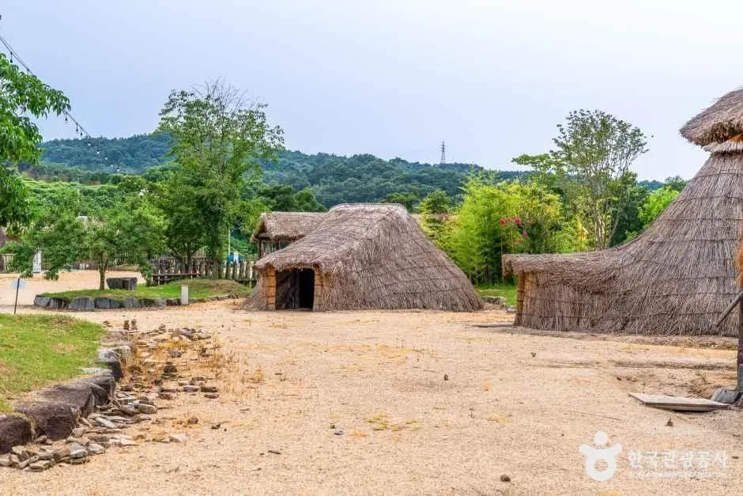
▲ 유적지 인근 선사체험장의 움집. 청동기 체험이 이어지는 곳이다. 사진=한국관광공사
코스모스·해바라기·맨드라미 등을 약 10헥타르에 심었다는 보도가 있다. 다만 개화 시점은 날씨에 좌우되고 올해 개화 상황을 확인한 자료는 아직 없다. 군은 추석 연휴에 꽃무릇이 핀다고 안내했으니, 축제 기간에는 국화와 코스모스가 중심이 될 가능성이 크다.
| 시간 | 예상 분위기 | 근거 |
|---|---|---|
| 평일 오전 | 여유로움 | 추정(공식 혼잡 정보 없음) |
| 주말 오전 | 주차 가능, 셔틀 첫차 전후 대기 가능 | 2025 셔틀 첫차 09:30 기준 |
| 주말 오후 | 붐빈다는 후기 | 방문 후기 1건, 공식 아님 |
| 공연 시간대 | 무대 주변 혼잡 | 올해 콘서트 일정 미확인 |
| 저녁 | 셔틀 막차 확인 필요 | 2025 셔틀 18:30 종료 |
5. 먹거리와 입장료 환급 — 쓰는 순서
입장료 5,000원은 전액 화순사랑상품권으로 돌려받는다. 결국 실질 부담은 0원에 가까운 구조다. 단 상품권은 화순 안에서만 쓸 수 있으므로, 축제장 푸드트럭이나 화순읍 상권에서 쓰는 순서를 미리 정해 두면 좋다. 군은 팬사인회와 스탬프투어로 방문객을 읍내로 유도할 계획이다.
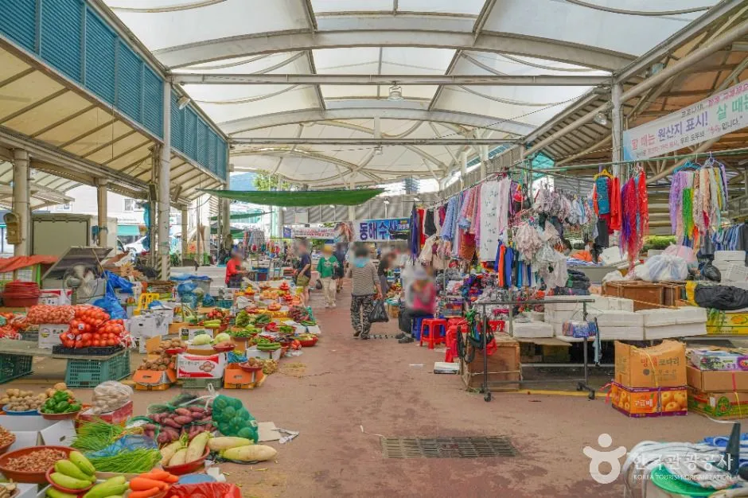
▲ 화순고인돌전통시장. 한국관광공사 안내상 화순오일장은 3·8일에 선다. 사진=한국관광공사
| 곳 | 내용 | 주소·비고 |
|---|---|---|
| 화순고인돌전통시장 | 화순오일장 3·8일(관광공사 정보), 스탬프투어 연계 | 화순읍 시장길 44 |
| 파크골프장 | 스탬프투어 미션 완료 시 무료입장 | 위치 미확인 |
| 팬사인회 | 공연 종료 후 화순읍 | 일정 미확인 |
6. 연계 코스 — 운주사·화순적벽·세량지
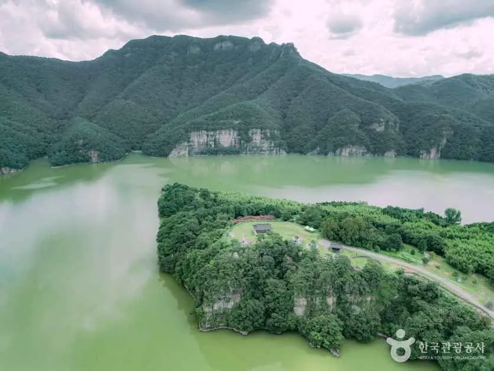
▲ 동복호 상류의 화순적벽 일대. 가을 풍경 코스로 자주 묶인다. 사진=한국관광공사
축제 후 여력이 있다면 운주사와 화순적벽을 묶을 수 있다. 다만 시간과 요금은 확인된 것만 적는다.
| 장소 | 주소(관광공사) | 확인된 내용 |
|---|---|---|
| 운주사 | 도암면 천태로 91-44 | 사찰: 관광공사 정보상 하계 07:00~19:00, 연중무휴, 주차 가능, 문의 061-374-0660. 인근 화순군립 운주사문화관(천태로 91-20)은 무료, 하절기 10:00~18:00, 월요일 휴무, 061-379-5893. 사찰 입장료는 확인하지 못함 |
| 화순적벽 | 이서면 적벽로 630-1 | 2025년 셔틀 수~일 운행, 화순온천 주차장 탑승 7,000원, 이서커뮤니티센터·적벽초소 5,000원. 2026 운영은 확인 필요. 관광공사 정보상 적벽투어는 월·화 휴무, 5월 성수기 10:00·11:00·13:00·14:30, 6~8월 10:00·14:00 출발로 안내돼 가을 시간표는 확인 못함. 문의 061-371-0173 |
| 세량지 | 화순읍 세량리 | 입장료 없는 물거울 명소로 소개. 가을 주차 상황은 확인 못함 |
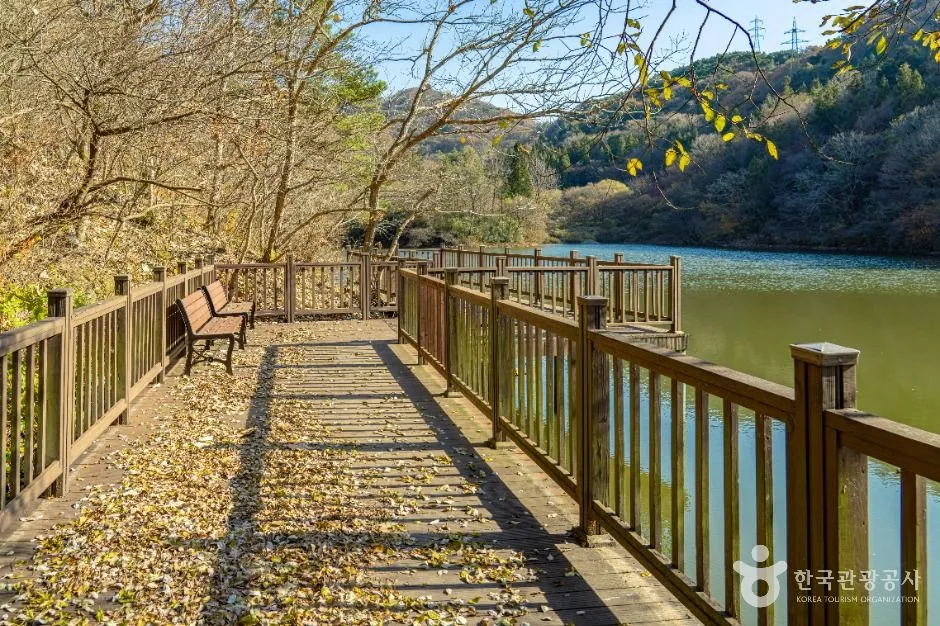
▲ 낙엽 쌓인 데크 너머로 호수가 보이는 늦가을 세량지 일대. 촬영 시기가 이번 축제 때와 다를 수 있다. 사진=한국관광공사
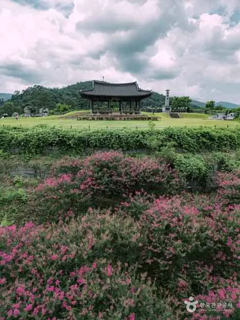
▲ 화순적벽 일대 풍경. 적벽은 사전 예약 없이 현장 매표로 셔틀을 타는 구조였다(2025 기준). 사진=한국관광공사
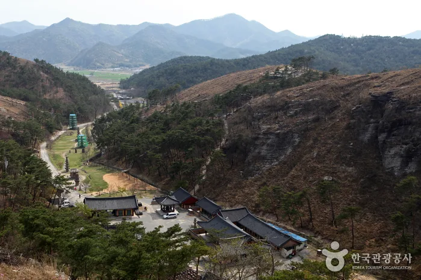
▲ 골짜기에 자리한 운주사 일대 전경. 석불과 석탑이 산자락 곳곳에 흩어져 있다. 촬영 시기 미상. 사진=한국관광공사
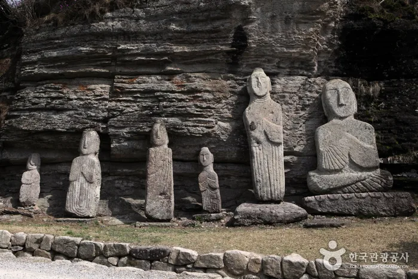
▲ 암벽 아래 늘어선 운주사 석불. 촬영 시기 미상. 사진=한국관광공사
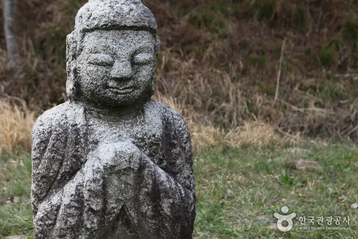
▲ 합장한 모습의 석불. 운주사는 투박한 표정의 석불이 많아 걷는 재미가 있다. 촬영 시기 미상. 사진=한국관광공사
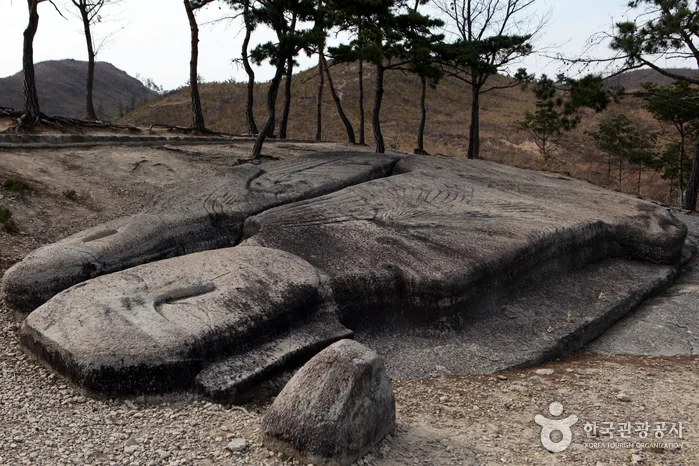
▲ 바닥 바위에 새긴 형태의 불상. 촬영 시기 미상. 사진=한국관광공사
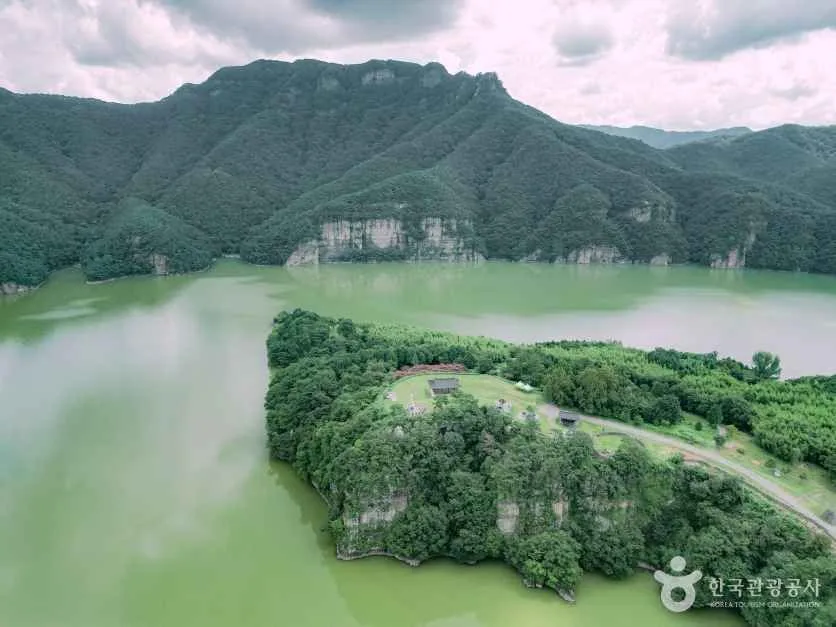
▲ 호수로 뻗은 숲과 절벽 산세가 어우러진 화순적벽 일대. 촬영 시기 미상(잎이 짙은 시기로 보임). 사진=한국관광공사
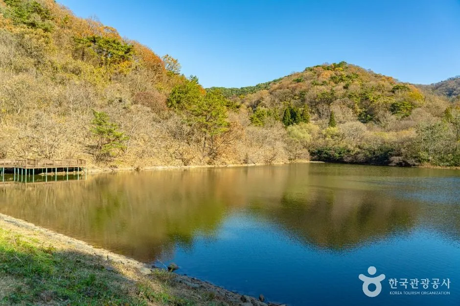
▲ 능선이 호수에 비친 세량지. 잎이 진 풍경으로 가을 이후 모습에 가깝지만 촬영 시기는 미상. 사진=한국관광공사
| 장소 | 요금 | 휴무·시간 |
|---|---|---|
| 고인돌 가을꽃 축제 | 5,000원(상품권 5,000원 환급) | 09:00~18:00, 10/16~25 |
| 운주사 사찰 | 확인하지 못함 | 관광공사 정보 07:00~19:00, 연중무휴 |
| 운주사문화관 | 무료 | 10:00~18:00, 월요일 휴무 |
| 화순적벽 | 2025 셔틀 5,000~7,000원, 2026 확인 못함 | 관광공사 정보 월·화 휴무(적벽투어) |
| 세량지 | 입장료 없는 명소로 소개 | 상시 개방으로 보이나 공식 시간 확인 못함 |
| 시각 | 동선 | 비고 |
|---|---|---|
| 09:00~11:30 | 고인돌 유적·꽃 정원 | 개장 09:00, 걷는 구간이 길어 2시간 이상 추정 |
| 11:30~12:45 | 화순읍 점심(환급 상품권 사용) | 이동 포함 추정 |
| 13:00~15:00 | 운주사 석불·석탑 | 고인돌에서 30~40분 추정, 문화관은 월요일 휴무 |
| 15:30~16:30 | 세량지 산책 | 운주사에서 30~40분 추정, 일몰 전 도착 권장 |
화순적벽은 투어 요일 제한과 현장 매표 구조 때문에 이 하루 코스에서는 뺐다. 적벽까지 넣으려면 월·화요일을 피해 따로 날을 잡고 출발 시각을 먼저 확인하는 편이 낫다.
같은 호남권 가을 코스로는 무등산 서석대 가을 가이드, 담양 메타세쿼이아 드라이브, 나주 영산강 축제가 있다. 남쪽으로 내려가면 목포 유달산이나 보성 대한다원 가이드와 이어 보기 좋다.
7. 가족 동반이라면 — 선사체험과 체험 프로그램
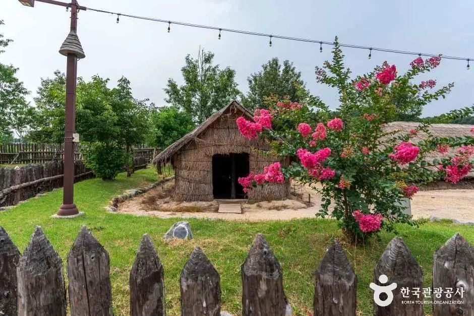
▲ 움집 옆 꽃이 핀 모습. 선사체험장은 가족 방문객이 많이 찾는 구간이다. 사진=한국관광공사
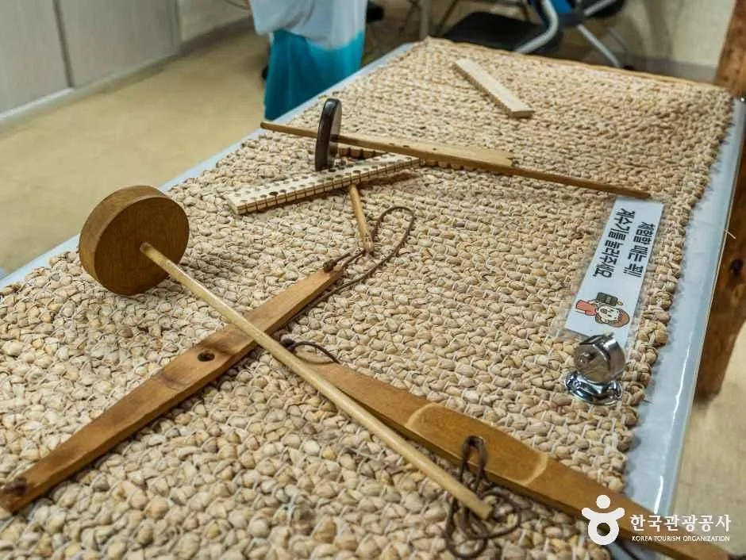
▲ 가락바퀴와 베틀 도구 전시. 청동기 생활 체험 프로그램과 이어지는 구성이다. 사진=한국관광공사
청동기 의상 대여, 고인돌 장신구 만들기, 사냥 체험 등이 보도됐다. 전년에는 알파카 먹이주기, 고인돌빵 만들기도 있었지만 올해 구성은 확인하지 못했다. 체험별 요금도 확인하지 못했다.
ℹ️ 일정이 출처마다 다를 때
이번 축제 시작일은 10월 16일(군 보도 다수)과 17일(일부 매체)로 갈린다. 출발 전 화순군 관광체육과(061-379-3575~7)에 날짜와 주차 운영을 확인하자.
✅ 출발 전 체크리스트
· 기간 10/16~25, 개막식 없음, 입장료 5,000원 전액 상품권 환급
· 내비: 화순 고인돌 유적(도곡면 고인돌1로 180)
· 주차·셔틀은 2026 공식 발표를 확인하지 못했고 2025는 1,980면·셔틀 09:30~18:30
· 공식 혼잡 정보는 확인하지 못함, 오전 방문 권장
· 연계: 운주사문화관 월요일 휴무(사찰은 연중무휴 안내), 화순적벽 투어는 월·화 휴무 안내라 요일 확인
8. 요약
2026 화순 고인돌 가을꽃 축제는 10월 16일부터 25일까지 10일간(일부 매체는 17일 개막으로 표기) 유네스코 세계유산 화순 고인돌 유적지에서 열리며, 입장료 5,000원은 화순사랑상품권으로 전액 환급된다. 올해는 개막식 없이 콘텐츠와 편의시설에 집중하고, 공연 후 화순읍 팬사인회와 전통시장·파크골프장 스탬프투어로 읍내 연계를 늘린다.
자차 방문객은 내비에 도곡면 고인돌1로 180을 찍고 주말 오전에 도착하는 편이 낫다. 2026 주차 규모와 셔틀 시간은 확인하지 못했고, 전년에는 1,980면과 도곡~춘양 순환 셔틀이 있었다. 개화 상황, 올해 콘서트 라인업, 체험 요금, 운주사 사찰 입장료와 광주 출발 실측 소요 시간(본문 표는 추정)도 확인하지 못했다.